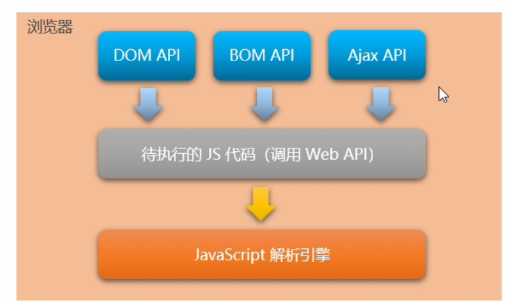
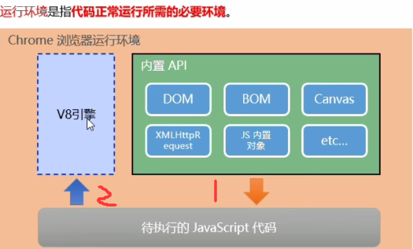

<!DOCTYPE html>
<html lang="en">

<head>
    <meta charset="UTF-8">
    <meta http-equiv="X-UA-Compatible" content="IE=edge">
    <meta name="viewport" content="width=device-width, initial-scale=1.0">
    <title>Document</title>
</head>

<body>
    <script>

        // 1.思考:为什么JavaScript 可以在浏览器中被执行
        // 因为有js解析引擎

        // 2.不同的浏览器使用不同的JavaScript解析引擎:
        // Chrome浏览器 => v8      性能最好
        // Frefox浏览器 => OdinMonkey(奥丁猴)
        // Safri浏览器 => JSCore
        // IE浏览器 => Chakra(查克拉)
        // etc....


        // 2.思考:为什么JavaScript可以操作DOM和BOM
        // 每个浏览器都内置了DOM、BOM这样的API函数，
        // 因此，浏览器中的JavaScript才可以调用它们。
        // 最后用js解析引擎
        // 

        //----------- 浏览器中的JavaScript运行环境-----------------------------------------
        // 浏览器中的JavaScript运行环境
        // 运行环境是指代码正常运行所需的必要环境。
        // 运行环境-- - 解析引擎（内置apI）
        // 


        //         总结:
        // 1.V8引擎负责解析和执行JavaScript 代码。
        // 2.内置API是由 运行环境 (浏览器)提供的特殊接口,
        //   只能在所属的运行环境中被调用。
        // 脱离了浏览器环境 就不能执行BOM DOM了

   


    </script>
</body>

</html>